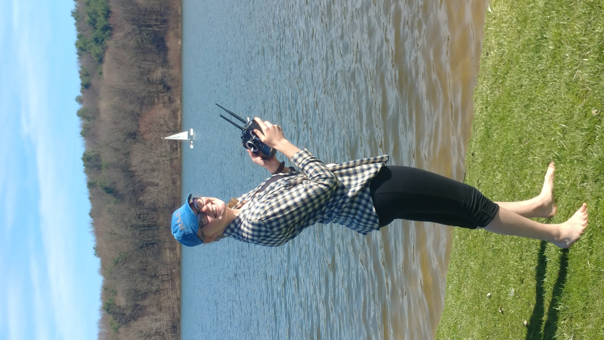

About Me
When not building things, I can be found rowing, sailing, hiking, making stained glass art, and wishing to pet every dog that walks past. I haven't always been interested in engineering by name but I always have liked to build things, from challenging myself to build a dollhouse entirely out of paper and tape to making the Globe Theatre out of cake for a seventh grade project.
I started my degree in Biology, actually, at the University of Edinburgh, but was upset when their strict curriculum kept me from taking physics and math. I transferred to the University of Pittsburgh to do Bioengineering but realized I really just liked the physics and math, and that I loved working with my hands: prototyping. This led me to Mechanical Engineering and product development.
While at Pitt, I founded a club that builds an autonomous sailboat, designed a device that connects Deaf children with music and dance, completed three rotations at a medical device company, and built a unicycle-powered pot stirrer; I've learned to embrace my creative, sometimes unorthodox, ideas as a strength rather than a weakness. It's no longer about if I can do it, but how.
My interests lie in human-centered design, medical devices, robotics, and reducing waste in our oceans. A lifetime goal of mine is to invent something using compliant mechanisms that reduces waste in the medical industry.
In addition, I competed at Head of the Charles rowing regatta in 2023 and sailed across the Atlantic Ocean in the fall of 2021.